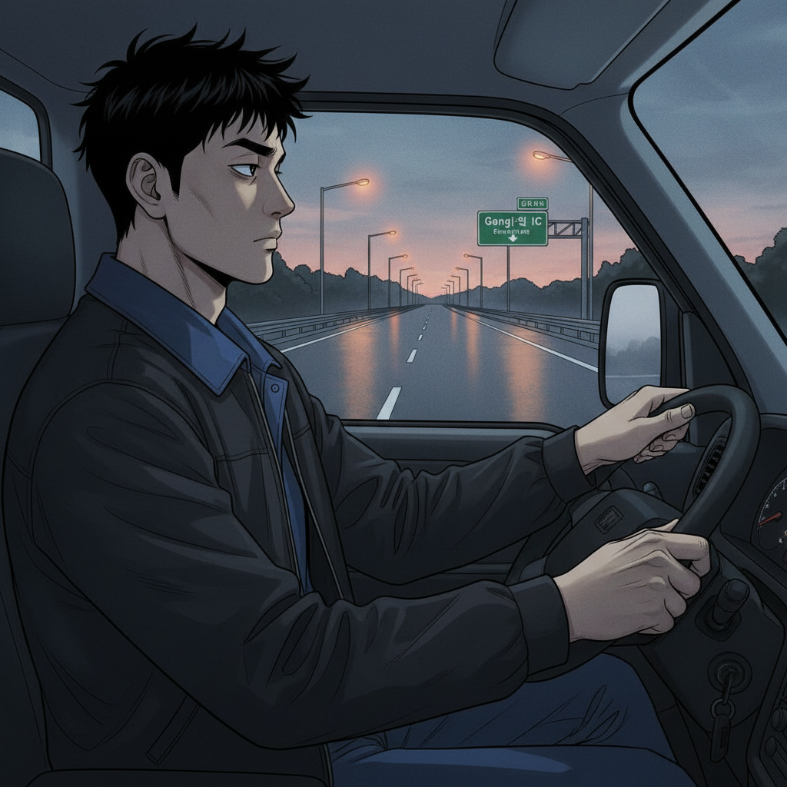
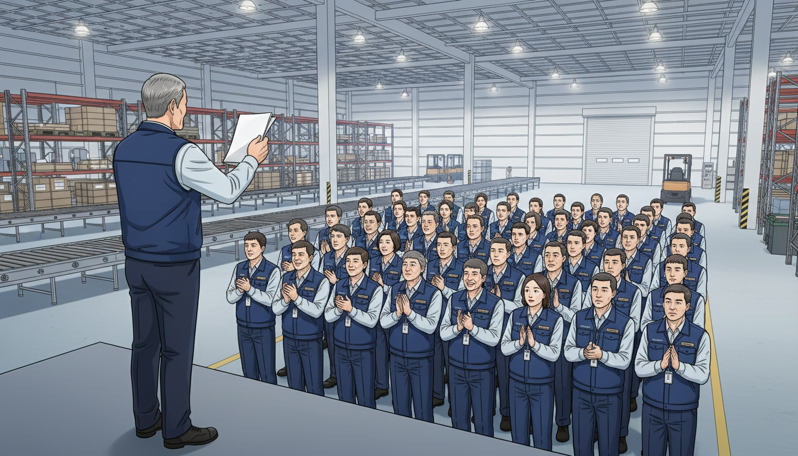

📦 Do, 85% - CJ대한통운 AI 도입 생존기
Episode 10: "85%의 진실"
🚚 새벽의 고민

새벽 5시 30분. 곤지암 IC.
도진은 1톤 트럭을 몰고 있었다. 고속도로는 텅 비어 있었다. 가로등 불빛이 규칙적으로 지나갔다.
라디오에서 뉴스가 흘러나왔다.
"...CJ대한통운, AI 물류시스템 도입 3개월 만에 전국 평균 효율 23% 상승..."
도진은 라디오 볼륨을 낮췄다.
3개월 전이 떠올랐다. 김 센터장 앞에서 섰던 순간. "85% 달성 못 하면 계약 연장 없다"던 말. 그때 완료율은 78.2%였다.
지금은 89.7%다.
숫자로 보면 성공이다. 하지만 뭔가 찝찝했다.
부평 IC 출구가 보였다. 도진은 방향지시등을 켰다.
오늘 조회 시간에 뭔가 발표가 있다고 했다. 서윤 PM이 온다고 했다.
트럭이 출구로 빠져나갔다. 물류센터까지 10분.
도진은 핸들을 꽉 쥐었다.
🏆 1위의 환호와 그늘

오전 6시. 부평 물류센터 집하장.
60명의 직원이 모여 있었다. 조회 시간이다.
김 센터장이 앞에 섰다. 손에 A4 용지를 들고 있었다.
"발표하겠습니다."
센터장이 종이를 펼쳤다.
"지난 3개월간 우리 센터 평균 배송완료율, 89.7%."
직원들이 웅성거렸다.
"전국 22개 센터 중... 1위입니다."
박수가 터졌다. 환호성도 나왔다.
도진은 박수를 쳤다. 옆에서 김택배도 박수를 쳤다. 하지만 둘 다 표정이 밝지 않았다.
뒤쪽에 서윤이 서 있었다. 검은색 패딩 점퍼. 청바지. 운동화. 3개월 전과는 다른 차림이었다.
김 센터장이 계속 말했다.
"이건 여러분의 노력과, 그리고..."
센터장이 서윤을 봤다.
"서윤 PM의 AI 시스템 덕분입니다."
직원들이 서윤을 봤다. 박수가 이어졌다. 서윤은 고개를 숙여 인사했다.
조회가 끝났다. 사람들이 흩어졌다.
도진은 서윤에게 다가갔다.
"축하드려요."
"고맙습니다."
서윤의 표정도 밝지 않았다.
📊 화려한 성과표
오전 10시. 임시 사무실.
서윤은 컨테이너를 개조한 공간에 앉아 있었다. 노트북 화면에 파워포인트가 열려 있었다.
AI 물류혁신 3개월 성과 보고:
첫 슬라이드:
- 배송완료율: 78% → 89.7% (+11.7%p)
- 오류율: 2.1% → 1.2% (-43%)
- 평균 처리시간: 6.2분 → 4.5분 (-27%)
두 번째 슬라이드:
- ROI: 218%
- 투자 회수 기간: 8개월
- 연간 예상 절감액: 2억 3천만원
화려한 그래프들. 상승하는 화살표들. 녹색 숫자들.
서윤은 창밖을 봤다.
집하장에서 직원들이 상자를 나르고 있었다. 땀을 흘리고 있었다. 겨울인데도.
서윤은 다시 화면을 봤다.
세 번째 슬라이드.
- 인원 변화: 22명 → 19명 (-3명)
이 슬라이드는 아직 비어 있었다. 제목만 있었다.
서윤은 커서를 그 위에 놓았다. 깜빡였다.
타이핑을 시작하려다 멈췄다.
창밖을 다시 봤다.
🍽️ 식당에서의 직언
오후 12시 30분. 구내식당.
도진, 김택배, 서윤이 같은 테이블에 앉았다. 불고기 덮밥을 먹고 있었다.
김택배가 숟가락을 내려놓았다.
"PM님, 질문 하나 해도 돼요?"
"네."
"솔직히 궁금한 게 있어요."
서윤이 김택배를 봤다.
"AI 도입하고... 우리 인원 줄었잖아요."
서윤의 숟가락이 멈췄다.
도진이 말했다.
"22명에서 19명. 3명 감축."
"그게..."
김택배가 서윤을 똑바로 봤다.
"그게 85%의 진실 아닌가요?"
식당이 조용해졌다. 주변 테이블 사람들도 대화를 멈췄다.
서윤은 대답하지 못했다.
"처음엔 AI가 우리를 돕는 줄 알았어요."
김택배가 계속 말했다.
"근데 결국 사람을 줄이려고 도입한 거 아니에요?"
"아니에요."
서윤이 말했다. 목소리가 떨렸다.
"원래 목적은 효율 개선이었어요."
"그럼 왜 3명이 나갔어요?"
김택배의 목소리가 날카로워졌다.
"그건..."
도진이 끼어들었다.
"형님, 그만하세요."
"왜, 너도 같은 편이었던거야?"
"PM님 잘못 아니야."
"그럼 누구 잘못이에요?"
침묵.
서윤이 일어섰다.
"죄송합니다. 먼저 일어나겠습니다."
그녀가 식판을 들고 자리를 떠났다.
김택배가 한숨을 쉬었다.
"나 너무 심했나요?"
도진은 대답하지 않았다. 창밖을 봤다. 서윤이 컨테이너로 걸어가고 있었다. 어깨가 처져 있었다.
🚦 85%의 의미
오후 3시. 도진의 1톤 트럭 안.
주택가를 지나고 있었다. 신호 대기.
도진은 핸들에 이마를 기댔다.
김택배의 질문이 계속 맴돌았다.
"그게 85%의 진실 아닌가요?"
도진은 생각했다.
3개월 전, 서윤이 처음 왔을 때. 그녀는 말했다. "AI는 여러분을 돕기 위한 겁니다."
거짓말은 아니었다. 실제로 일이 빨라졌다. 실수도 줄었다. 퇴근도 빨라졌다.
하지만.
22명이 하던 일을 19명이 하고 있다.
AI가 3명 몫을 하고 있다.
도진은 깨달았다.
"AI가 우리를 대체한 게 아니야."
혼잣말이 나왔다.
"AI 없이도 할 수 있었던 일을... 더 적은 사람으로 하게 만든 거지."
신호가 바뀌었다. 초록불.
도진은 액셀을 밟았다.
문득 서윤의 얼굴이 떠올랐다. 식당에서 나갈 때 그녀의 표정. 죄책감이 역력했다.
"PM님도 몰랐을 거야. 처음엔."
도진은 중얼거렸다.
"근데 이제는 알겠지."
🗣️ 불편한 진실
오후 6시. 센터 회의실.
도진, 김택배, 서윤, 김 센터장이 앉아 있었다.
테이블 위에 서윤의 노트북이 놓여 있었다. 화면에 파워포인트가 켜져 있었다.
김 센터장이 말했다.
"내일 본사 보고가 있어서, 미리 점검하려고 모였습니다."
서윤이 고개를 끄덕였다.
"시작하겠습니다."
첫 번째 슬라이드. 효율 개선 수치들.
두 번째 슬라이드. ROI와 절감액.
센터장이 고개를 끄덕였다.
"좋아. 다음."
세 번째 슬라이드.
제목만 있었다. "인원 변화"
내용은 비어 있었다.
"이 부분은..."
서윤이 말을 멈췄다.
도진이 물었다.
"PM님, 질문 하나만 하겠습니다."
"네."
"본사에서 요구한 KPI가 뭐였어요?"
서윤이 도진을 봤다.
"...효율 20% 개선입니다."
"그게 다예요?"
침묵.
김 센터장이 끼어들었다.
"도진 씨, 왜 그런 걸 물어?"
"센터장님께 여쭙겠습니다."
도진이 센터장을 봤다.
"인원 감축 목표는 몇 %였어요?"
센터장의 표정이 굳었다.
"...15%였네."
"정확히 3명이네요. 22명의 15%."
회의실이 조용해졌다.
도진이 서윤을 봤다.
"PM님은 몰랐을 거예요. 처음엔."
서윤의 눈에 눈물이 고였다.
"하지만 본사는 알고 있었겠죠. 효율 개선이 곧 인원 감축이라는 걸."
김택배가 말했다.
"그럼 85%는 뭐예요? 생존 기준선이에요?"
센터장이 한숨을 쉬었다.
"맞아. 85% 못 넘으면 센터 자체가 위험했어."
"그래서 AI를 도입한 거군요."
도진이 말했다.
"사람을 돕기 위해서가 아니라, 센터를 살리기 위해서."
센터장이 고개를 숙였다.
"미안하다."
서윤이 일어섰다. 노트북을 닫으려고 했다.
"잠깐만요."
도진이 말했다.
"그 슬라이드, 채우세요."
"네?"
"인원 변화 슬라이드. 비워두지 마세요."
"하지만..."
"진실을 쓰세요. 효율 개선과 인원 감축, 둘 다."
서윤이 도진을 봤다.
"그럼... 본사에서 문제 삼을 텐데요."
"문제 삼게 두세요."
김택배가 거들었다.
"숨기면 더 큰 문제예요. 우리 신뢰를 잃는 게."
센터장이 말했다.
"도진 씨 말이 맞아. 서윤 PM, 사실대로 쓰시게."
⌨️ 용기 있는 기록
서윤이 노트북을 다시 열었다.
커서가 빈 슬라이드 위에서 깜빡였다.
타이핑이 시작됐다.
"인원 변화: 22명 → 19명 (-13.6%)"
"이유: AI 시스템 도입으로 업무 효율 개선"
"영향: 남은 직원 업무 강도 +15%"
도진이 고개를 끄덕였다.
"그렇게 쓰는 거예요."
✨ 숫자 뒤의 사람
새벽 1시. 물류센터 흡연실.
도진이 담배를 피우고 있었다. 연기가 올라갔다.
문이 열렸다. 서윤이 들어왔다. 담배는 안 피우지만, 들어와서 벤치에 앉았다.
"안 주무세요?"
"못 자겠어요."
서윤이 하늘을 올려다봤다. 별이 보였다.
"내일 발표 걱정돼요."
"잘하실 거예요."
"혹시... 본사에서 저한테 화내면 어떡하죠?"
도진이 담배를 비볐다.
"그럼 그런 거죠, 뭐."
"도진 씨는 안 무서워요?"
"뭐가요?"
"AI가 결국 사람 자리를 빼앗는다는 게."
도진은 잠시 생각했다.
"무서워요."
솔직한 대답이었다.
"하지만 AI 탓은 아니에요."
"그럼 뭐예요?"
"AI를 어떻게 쓰느냐의 문제죠."
서윤이 도진을 봤다.
"처음엔 몰랐어요."
서윤이 말했다.
"AI가 사람을 돕는 거라고만 생각했어요. McKinsey에서도 그렇게 배웠고, 프로젝트도 그렇게 했어요."
"틀린 말은 아니에요."
"하지만 현장에선 달랐어요. AI가 효율을 높이면, 회사는 사람을 줄였어요."
"그게 현실이죠."
도진이 말했다.
"그래도 PM님은 잘하신 거예요."
"뭐가요?"
"진실을 보고서에 쓰기로 한 거."
서윤이 손을 봤다. 3개월 전, 물집이 잡혔던 손. 지금은 나았다.
"도진 씨, 하나만 물어볼게요."
"네."
"저... 계속해도 될까요? 이 일."
도진이 서윤을 봤다.
"왜요?"
"제가 만든 AI 때문에 사람들이 일자리를 잃었어요. 그게 계속 마음에 걸려요."
도진은 담배를 꺼냈다. 또 한 개비. 불을 붙이지 않고 물고만 있었다.
"PM님."
"네."
"AI는 계속 발전할 거예요. PM님이 안 만들어도, 다른 누군가 만들어요."
"그래서요?"
"그러니까 PM님 같은 사람이 필요한 거예요."
"무슨 말이에요?"
"AI를 만들면서도, 사람을 생각하는 사람."
서윤의 눈이 커졌다.
"PM님은 처음엔 몰랐지만, 이제 알잖아요. 숫자 뒤에 사람이 있다는 걸."
도진이 담배를 입에 물었다.
"그걸 아는 사람이 AI를 만들어야 해요. 그래야 조금이라도 나은 미래가 오죠."
서윤이 눈물을 닦았다.
"고마워요."
"저도 배웠어요."
"뭘요?"
"AI는 중립이에요. 적도 아니고 동료도 아니에요. 그냥 도구."
도진이 하늘을 봤다. 별이 더 많이 보였다.
"문제는 그 도구를 쥔 사람이 어떤 마음을 가졌느냐죠."
서윤이 고개를 끄덕였다.
새벽 1시 30분.
두 사람은 흡연실에서 별을 봤다.
내일 아침, 서윤은 본사에 간다. 진실이 담긴 보고서를 들고.
도진은 새벽 5시에 다시 출발한다. 235건. 89.7%. 85%를 넘은 숫자.
하지만 이제 그들은 안다.
85%는 숫자가 아니다.
그 숫자 뒤에 사람이 있다는 것을.
💡 Hands-On Tutorial: 서윤의 프로젝트 성과 측정 대시보드
Real-world situation: AI 도입 후 정량적 성과만 보고하면 조직의 불신 초래. 효율 + 인적 영향을 함께 측정하는 시스템 필요.
Copy-paste prompt:
다음을 고려한 balanced scorecard를 설계해주세요:
측정 항목:
- 효율 지표 (배송완료율, 처리시간, 오류율)
- 비용 지표 (인건비, 운영비)
- 인적 지표 (인원 변화, 만족도, 이직률)
- 고객 지표 (클레임, 만족도)
각 지표별로:
1. 측정 방법
2. 목표 수치
3. 데이터 수집 방법
4. 경고 기준 (언제 빨간불?)
표 형식으로 정리해주세요.
What you'll get:
|---------|------|---------|------|---------|
| 효율 | 배송완료율 | 당일 완료/전체 | 85% | <80% |
| 인적 | 직원 만족도 | 월별 설문 (5점) | 3.5+ | <3.0 |
| ... | ... | ... | ... | ... |
Try it yourself:
- [ ] 위 프롬프트를 Claude 또는 ChatGPT에 복사
- [ ] 자신의 업종에 맞게 지표 수정
- [ ] 결과를 Google Sheets에 구현
- [ ] 조건부 서식으로 경고 기준 시각화
Example result:
**Balanced Scorecard - AI 물류시스템**
| 카테고리 | 지표 | 측정방법 | 목표 | 경고기준 | 데이터 수집 |
|---------|------|---------|------|---------|------------|
| **효율** |
| 배송완료율 | (당일완료건수/전체건수)×100 | 85% | <80% | 시스템 자동집계 |
| 평균 처리시간 | 총시간/건수 | 4.5분 | >6분 | 시스템 자동집계 |
| 오류율 | (오류건수/전체건수)×100 | <1.5% | >3% | 시스템 자동집계 |
| **비용** |
| 1일 인건비 | 근무인원 × 일당 | -15% (목표) | 변화없음 | 인사 시스템 |
| 시스템 운영비 | 월 AI 시스템 비용 | <1천만원 | >1.5천만원 | 재무 보고서 |
| **인적** |
| 인원 변화율 | (현재인원/초기인원)×100 | -15% | >-20% | 인사 기록 |
| 직원 만족도 | 월 설문 (5점 척도) | 3.5점+ | <3.0점 | 월말 익명 설문 |
| 월 이직률 | (퇴사자/전체)×100 | <2% | >5% | 인사 기록 |
| 업무 강도 | 주당 평균 근무시간 | <50시간 | >55시간 | 근태 시스템 |
| **고객** |
| 고객 만족도 | 배송 후 설문 (5점) | 4.0점+ | <3.5점 | 자동 SMS 설문 |
| 월 클레임 건수 | 고객 불만 접수 | <20건 | >40건 | CS 시스템 |
**경고 시스템 자동화 방법**:
1. Google Sheets 조건부 서식
- 목표 달성: 녹색
- 경고 기준 초과: 빨간색
- 중간: 노란색
2. 주간 알림 설정
- 빨간불 지표가 2개 이상: 센터장 + PM 이메일
- 빨간불 지표가 5개 이상: 본사 보고
3. 월별 트렌드 그래프
- 각 지표의 3개월 추이
- 개선/악화 방향 화살표 표시
🎯 Learning Concept: "Don't Think, Do AI" - Level 3
Concept: "숫자 뒤의 사람을 측정하라"
서윤이 처음 만든 보고서는 화려했다. 효율 +27%, ROI 218%. 녹색 숫자들. 상승하는 화살표들.
하지만 김택배의 질문 한 마디가 모든 걸 바꿨다. "그게 85%의 진실 아닌가요?"
AI 프로젝트를 측정할 때, 우리는 흔히 "효율"만 본다. 하지만 효율 뒤에는 사람이 있다. 22명이 19명이 되었을 때, 남은 19명의 업무 강도는 15% 증가했다. 이직률은? 만족도는? 번아웃 위험은?
Why it matters in 물류업:
물류센터는 숫자로 돌아간다. 배송완료율, 처리시간, 오류율. 하지만 그 숫자를 만드는 건 사람이다. 사람이 무너지면 숫자도 무너진다.
서윤은 배웠다. 진짜 좋은 대시보드는 효율만 보여주는 게 아니다. 사람도 보여준다. 인원 변화, 만족도, 업무 강도. 이 숫자들이 함께 올라가야 지속 가능한 성공이다.
Remember (도진의 말):
"85%는 숫자가 아니에요. 그 숫자 뒤에 사람이 있어요. 사람을 측정하지 않으면, 결국 시스템도 무너져요."
**[Episode 10 완료]**
다음 에피소드 예고: 본사의 반응은? 서윤의 진실 보고서가 가져올 변화는?